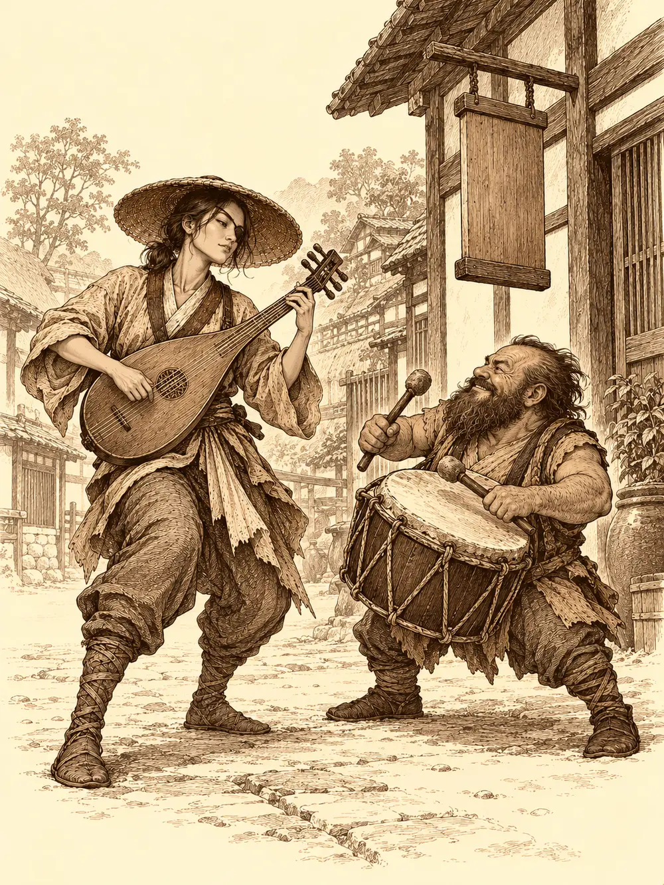

Capítulo 22
Mapaches en peligro
Libro II · El favor del shogun
A Hayate todavía le hormigueaban las plumas. Era un cosquilleo leve, constante, como el aire antes de una tormenta, y a veces, al tocar algo de metal, le saltaba de los dedos una chispa azul. Se había adentrado demasiado en unas montañas donde rugía un frente tormentoso, y un rayo lo había alcanzado de lleno. Lo trajeron de vuelta casi deshecho. Sirth se encargó de él, y de lo que hizo el clérigo no habló nadie; Hayate solo sabía que desde entonces se sentía un poco eléctrico. Llevaba al cuello una chapa metálica con la forma de un rayo, que Sirth había encontrado por ahí y le había regalado.
Sun Gukon también había vuelto. Durante su ausencia había estado cuidando el templo de la montaña, el de las niñas, y animando a los peregrinos a visitarlo, en parte por respeto a la familia que lo había levantado y en parte, no lo negaba, porque allí estaba su estatua.
En la base, el enano del tambor por fin había terminado su agujero. Se metió detrás de la diana del pasillo, pegó el ojo a la rendija y vio dormir al kamaitachi sin que el kamaitachi lo viera a él. Sun Gukon, de vuelta en casa, fue al piano y aporreó las teclas. El nekomata abrió un ojo, buscó al enano, que solía ser el culpable, se encontró con el mono y gruñó una maldición contra todos los monos del mundo antes de volver a dormirse.
Al salir encontraron algo nuevo. El patio donde vivían los yokai se había hecho más pequeño y en su lugar había una zona de entrenamiento con un poste giratorio, dianas y suelo de arena. Shizuka golpeaba el poste con la espada de madera. A su lado, un perro grande y de pelo claro la vigilaba moviendo la cola.
Sun se agachó a acariciarlo.
"Pero qué cosa más mona".
"Hola", dijo el perro, con una voz mucho más grave que la de Sun.
Se puso a dos patas, creció hasta superar en altura al mono y se convirtió en un inugami vestido de samurái. Saludó a Sun con una reverencia.
"No me había presentado. Disculpad. Soy un inugami. Os he preparado esto. Soy maestro de armas, podría entrenaros".
"Y te encargas de Shizuka", dijo alguien.
"Yo niños no cuido. Entreno".
"Es lo mismo".
Era Sota, el que Jin había escoltado hasta Sho, aunque a ellos no les dio ningún nombre: los de su raza, dijo, no tenían. Luego volvió a encogerse y a ser un perro, porque así estaba más cómodo.
Shizuka pasó corriendo junto a Sun Gukon, se paró, le miró de abajo arriba, sacó del bolsillo un plátano medio comido y se lo ofreció. Sun no lo cogió. La niña lo dejó caer y siguió corriendo hasta Hayate.
"¡Hayate! ¡He aprendido una cosa nueva!".
Retrocedió unos pasos, cerró los ojos con fuerza, sacó la lengua como si hiciera un gran esfuerzo y apuntó con el dedo. De la punta salió una chispa de fuego que voló hacia Hayate y le chamuscó una pluma.
"Lo he aprendido mirando al dragón. Y a Jin. Y al panda".
Ninguno de los adultos le había enseñado eso. Lo había aprendido sola, mirándolos.
Cuando vio que se iban al pueblo, quiso ir con ellos.
"Tú te quedas aquí", dijo Sirth, y la sujetó por el hombro. "Que siempre te escapas. Esta vez me encargo yo".
Ukio seguía tostado, pero los campos volvían a florecer. En la taberna, Sun saludó a Kitaro como a un viejo amigo y se quedó mirando su brazo, que no era del todo un brazo, sino algo pálido y translúcido.
Luego, en la calle, vio a Zia.
Se le pusieron los ojos como platos. Se quedó tieso como un palo. Se acercó muy despacio, hincó una rodilla en el suelo delante de la tabaxi y le habló con una voz que nadie le había oído nunca.
"He visto magos tan poderosos como dioses. He soportado hechizos de los que salían ejércitos. Pero el encantamiento que acabo de sufrir por ti eclipsa todo eso. Con una sola mirada has puesto de rodillas a un rey, y ahora se siente un simple mono. Tu belleza avergüenza al cielo más estrellado, y no lo digo en vano, porque este mono ha visto paisajes y tesoros que enloquecerían al más virtuoso de los artistas".
Sacó un anillo, el de la tierra, el que había ganado en el templo de la montaña.
"Quiero sellar estas palabras con este anillo. Deseo que lo aceptes, como deseo que aceptes mi corazón".
Zia lo miró de arriba abajo.
"¿Y tú quién eres? No pareces un rey".
Sun intentó explicarle quién era, lo del templo, lo de las hazañas.
"No te conozco bien", le dijo ella. Se quedó con el anillo en la mano. "Pero podemos empezar a conocernos".
Sun se levantó como si le hubieran prometido el mundo.
Junto a la plaza, una mujer colgaba un letrero en la fachada de una casa recién limpiada. Llevaba un parche en un ojo, un sombrero de ala ancha y un laúd a la espalda. Al ver acercarse al enano dejó el martillo y le tendió la mano.
"Hola. Soy Kimiko".
Estaba abriendo un puesto para reclutar mercenarios. El enano no le miraba la cara; le miraba el laúd. Ella se lo enseñó, empezó a tocar, y el enano sacó el tambor para seguirla. Tocaron un buen rato en mitad de la calle, a ver quién aguantaba más. Hayate le dio la bienvenida al pueblo.
Haru les repartió treinta monedas a cada uno; la pesca había ido bien. En la tienda de la madame, Sun entró dando tumbos y se apoyó en el mostrador.
"Madame, me acabo de enamorar".
La madame les contó al enano y a él que estaba haciendo reformas en el burdel para instalar una sección de máquinas. Era solo el principio; ya crecerían. El enano le dejó cincuenta monedas para la obra.
Por la entrada norte llegaron corriendo dos figuras pequeñas que apartaban a la gente a empujones. Eran dos tanuki. Iban sobrios, sin sus botellas.
"¡Cazadores! ¡Sois los cazadores! ¡Nos atacan!".
"¿Quién os ataca?".
"Hombres como vosotros. ¡Disfrazados! ¡Con un símbolo malo!".
Hayate le pidió a uno de ellos que lo dibujara. El tanuki trazó con el dedo en la tierra una boca llena de dientes, con cuernos. Hayate lo reconoció por la historia que les había contado Sirth.
"Otakemaru. El que venía del sur".
El enano abrazó a uno de los tanuki con tanta fuerza que el animal empujaba con las patitas para soltarse. Al final lo dejó en el suelo, les dio una ración de comida y una moneda a cada uno y los mandó a esperar a la taberna, con una nota atada al cuello para Kitaro.

Antes de salir, el enano tenía otra cosa en mente. Fue a buscar a Kimiko.
"¿Tocarías conmigo? Quiero dar un mensaje".
Se plantaron en el centro del pueblo, el tambor y el laúd, y el enano cantó:
"En el corazón de Kuroto, nuestra patria amada, hay un llamado urgente en la tierra sagrada. Con valor y esperanza levantaremos la voz. Ciudadanos, escuchen mi canción: recojamos la madera para nuestra protección. Fortaleceremos las murallas contra todo invasor".
Los vecinos se fueron acercando. Al terminar, varios fueron a buscar hachas y carretas. Iban a por madera para defender el pueblo. Lo que el enano no les dijo era que buena parte de esa madera la quería para las reformas del casino.
Conocían el camino. Entraron en el bosque de Jigoku, el siempre oscuro, el de la niebla eterna, y al rato vieron una columna de humo que subía por encima de las copas, en dirección a la aldea de los tanuki.
En mitad del sendero, entre la niebla, había una figura baja de pie junto a otra tendida en el suelo. El enano se acercó a hurtadillas de sombra en sombra, y Hayate se escondió entre los árboles con una flecha preparada.
La figura del suelo era un muerto andante, ahora muerto del todo. La de pie era un enano con armadura de malla bajo los ropajes, un escudo pequeño a la espalda y un martillo en la mano que estaba limpiando.
"Malditos bichos".
El enano del tambor salió de su escondite.
"¿Está usted bien?".
El otro dio un respingo.
"¡Por los dioses! ¿Por qué te acercas así a la gente?".
Se llamaba Romu. Le colgaba del cuello el símbolo de una divinidad que reconocieron como bondadosa, aunque no supieron entender su nombre. Se había perdido y aquel zombi lo había atacado. Cuando le contaron que iban a socorrer a unos yokai amigos, se le iluminó la cara.
"¿Yokai amistosos? Eso quiero verlo".
El enano del tambor se le acercó al oído.
"¿Lleva alcohol encima?".
"No".
"Mejor. Los que vamos a ver están obsesionados con él".
La aldea de los tanuki ardía. Las cabañas estaban en llamas, el gran edificio central se caía a pedazos y las jarras de sake reventaban con el calor como petardos. En la entrada, cuatro tanuki intentaban defenderse de un oni y de tres figuras con máscaras de zorro. En sus cascos llevaban la marca de Otakemaru.
Uno de los enmascarados los vio llegar.
"Rápido. Los cazadores están aquí".
Levantó la mano hacia el oni y la criatura empezó a moverse más deprisa. Otro de ellos le lanzó un hechizo, y la silueta del oni se volvió borrosa, difícil de seguir con la vista. El oni barrió con su alabarda a un tanuki, luego a otro, y a un tercero, que cayeron muertos en la tierra caliente.
Un rayo de los enmascarados alcanzó a Sun Gukon y al enano. Romu se adelantó, alzó su símbolo, bendijo al grupo y empezó a curar al que más sangraba. El enano extendió las manos y alrededor de los magos se hizo un silencio absoluto, un hueco sin sonido donde nadie podía pronunciar un hechizo.
Hayate voló entre dos cabañas en llamas y disparó al que mantenía la velocidad del oni. La primera flecha entró, la segunda también, y el enmascarado cayó. Sun Gukon se lanzó al cuerpo a cuerpo contra otro y lo derribó a golpes de bastón y de puño. Al caer el enmascarado, la máscara se le partió. Debajo había un elfo corriente, con la cara de cualquiera.
El tercero aguantaba, manteniendo al oni borroso, hasta que el enano le dio con la maza de caparazón y, como no caía, le mordió una oreja. Eso terminó de tumbarlo.
El oni quedó solo. Una cimitarra alcanzó a Hayate en un costado, y del cuerpo del arquero saltó un rayo que golpeó a quien lo había herido. Hayate se miró las manos, sorprendido.
El oni se regeneraba. Las heridas se le cerraban a ojos vistas. El enano le contó un chiste tan malo que el oni cayó al suelo de la risa, y con la maza lo obligó a enfrentarse otra vez a lo que lo rodeaba. Sun Gukon lo dejó aturdido de un golpe y le encadenó varios más. Hayate disparaba desde el aire. Romu seguía curando. El tanuki superviviente, escondido entre los matorrales, conjuró a su alrededor unas copias del enano para que el oni no supiera a cuál golpear.
Al final, Sun Gukon colocó la punta del bastón bajo la mandíbula del oni y le ordenó crecer. El bastón se alargó de golpe y le partió el cuello.
Cuando terminó, solo quedaba el crepitar del fuego.
El tanuki superviviente se acercó despacio a lo que había sido su aldea. Las casas se derrumbaban sobre sí mismas. El enano soltó la maza y abrió los brazos, y el tanuki se le echó encima.
Romu se quedó mirando la escena.
"Así que un demonio del sur está mandando a estos a matar a estas pobres criaturas". Acarició la cabeza del tanuki. "Si no os importa, me gustaría acompañaros a vuestro pueblo. Quiero quedarme allí y ayudar en lo que pueda".
Hayate se puso a batir las alas sobre los fuegos, empujando el aire hacia abajo. Los demás traían agua del lago. Apagaron el fuego, aunque la aldea quedó destrozada. El enano despellejó al oni y se guardó la piel. Alguien se llevó una de las máscaras para enseñar el símbolo a los demás.
El tanuki no tenía nada que recoger. Iba con lo puesto.
En la taberna de Ukio encontraron a los dos mensajeros completamente borrachos. Saltaban sobre las mesas, tiraban vasos, cantaban, y Kitaro y Shiro intentaban sujetarlos sin éxito.
"¡Por fin habéis vuelto! ¡Llevaos a estos, que están locos!".
El enano dio un golpe en la mesa con la maza. Los tanuki ni se inmutaron. Pero el que venía con ellos saltó de los brazos del enano, se subió a la mesa y se dirigió a sus compañeros con mucha solemnidad.
"¡Comportaos! Nuestro pueblo ha sido destruido. Y ahora estos de aquí nos van a dar cobijo en la fortaleza que tienen".
Nadie le había prometido tal cosa.
En una mesa, Kimiko hablaba con Bill y Zia. Sun Gukon se acercó tambaleándose, con la ropa rota y sangre por todo el cuerpo, y cayó de rodillas delante de la tabaxi.
"Zia. Estoy muy malherido. He tenido que matar a un oni enorme yo solo. Tu amor tiene que salvarme".
Intentó apoyarse en ella. Zia se apartó.
"Quita. Estás sucio y estás sangrando".